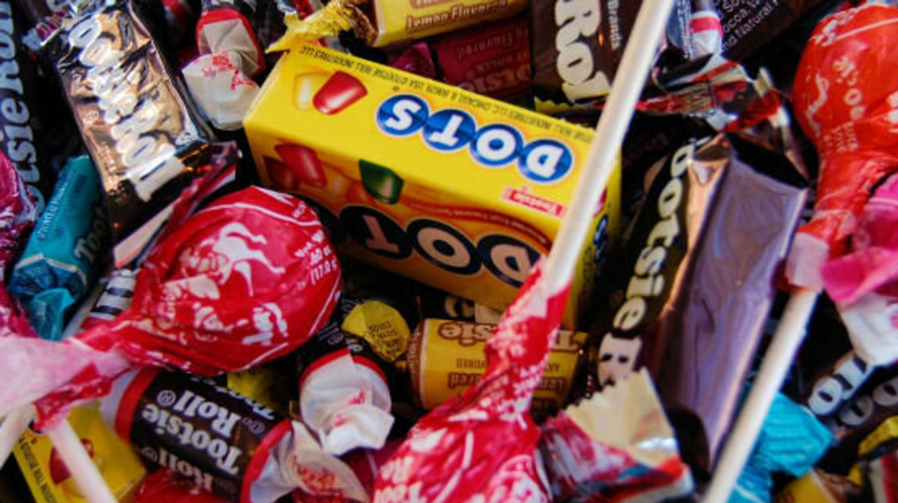

Launched in 1896 by the popularity of a single product, the iconic oblong piece of chewy, chocolate candy - Tootsie Roll Industries has grown to become one of the country's largest candy companies, with a lineup that includes some of the world's most popular candy, chocolate, and bubble gum brands. Thank you for visiting!
Crows are the oldest candy in the Dots family, first created in the late 19th century. Original dots date back to 1945, Tropical Dots to 2003, and Yogurt Dots to 2007. Sour Dots were introduced in 2009–2010.
Tootsie's brands include some of the most familiar candy names: Tootsie Roll, Tootsie Pop, Charms Blow Pop, Mason Dots, Andes, Sugar Daddy, Charleston Chew, Dubble Bubble, Razzles, Caramel Apple Pop, Junior Mints, Cella's Chocolate-Covered Cherries, and Nik-L-Nip. They're sold in a wide variety of venues, including supermarkets, warehouse and membership stores, vending machines, dollar stores, drug stores, and convenience stores.